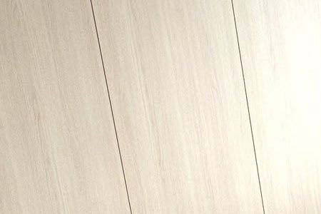
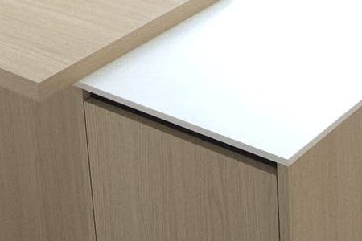

Vicenza oak and a white compact worktop
Kitchen for a house, January 2025. A full wall of tall units in an oak finish, and an island.

Doors
Egger H3157 ST12
Vicenza oak
Worktop and splashback
S63045 CM, 12 mm
compact board, India white
- Blum Merivobox drawers, Blum hardware
- Grohe Blue Pure Minta L supersteel tap with pull-out spout
- Blanco Etagon 500-U sink, black